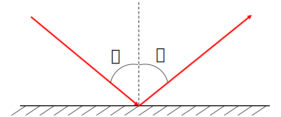
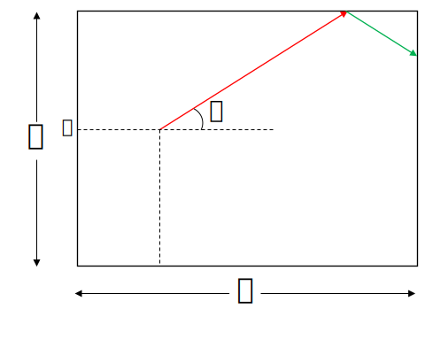
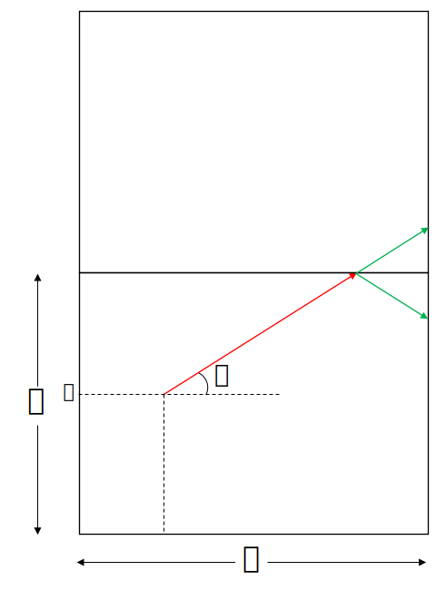
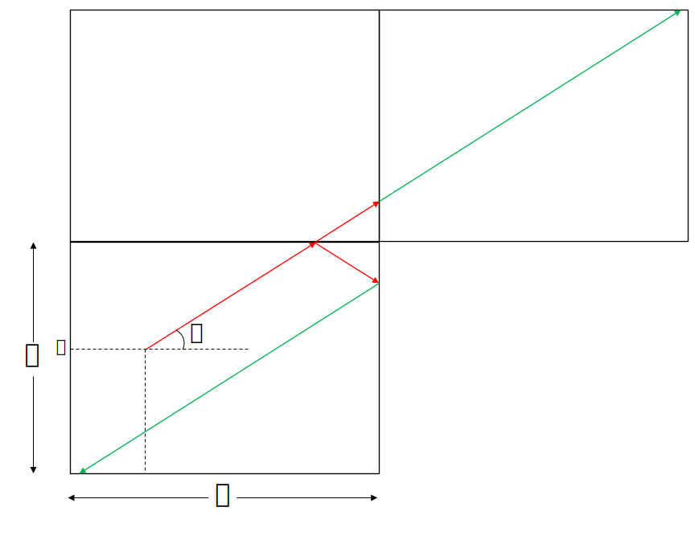

Imagine a 2-D rectangular box which all it's sides are mirror;
a 1-D light source directing with angle \( \alpha \) from the horizontal axis at point S with (\( x_{S} \) , \( y_{S} \)) coordinates
propagates and reflects on the horizontal walls \( n_{1} \) and vertical walls \( n_{2} \) times and then reaches the point O with (\( x_{O} \) , \( y_{O} \)) coordinates.
Problem: determine \( \alpha \).
The first thing that should be discussed is the principle of refleciton. The angle of the light with the the perpendicular of the surface at the incoming point is equal to it's reflection.
By using this principle, there exists a way to find a way to determine \( \alpha \). First consider the first reflection of the light. it will be nearly like the figure below.
Let's assume the reflected of the whole box above this one first and then just continue the first line until it hits the vertical wall like the figure below.
Both green lines starting point and angle from the horizontal axis are equal, thus their length will be equal and their hitting point will have equal distnace from horizontal wall. the upper point is the image of the other one.

It is important to note that in each step we are reflecting the whole box.
For retrieving the path of laser in the box, all reflected images of box must be reflected backwards (including the path inside them).
By continuing this with other reflections we will have this figure.
Now what we've got is a straight line from point S to O'. let O' coordinates be (\( x_{O'} \) , \( y_{O'} \)).
With every refleciton point O will be imaged in the new rectangle, so after \( n_{1} \) reflections with vertical walls O will be \( n_{1} \) times imaged vertically. Like vertical walls it will be \( n_{2} \) times imaged horizontally.
then O' coordinates from the edge point of it's rectangle will be:
\[
x^{\prime} =
\begin{cases}
x_{O} ,& \text{if } n_1 \text{ is even}\\
b - x_{O},& \text{otherwise}
\end{cases}
\]
\[
y^{\prime} =
\begin{cases}
y_{O} ,& \text{if } n_2 \text{ is even} \\
a - y_{O},& \text{otherwise}
\end{cases}
\]
Then O' coordinates are:
\[
x_{O'} =
\begin{cases}
n_{1} b + x_{O} ,& \text{if } n_{1} \text{ is even} \\
(n_{1} + 1) b - x_{O} ,& \text{otherwise}
\end{cases}
\]
\[
y_{O'} =
\begin{cases}
n_{2} a + y_{O} ,& \text{if } n_{2} \text{ is even} \\
(n_{2} + 1) a - y_{O} ,& \text{otherwise}
\end{cases}
\]
And finally we can determine the angle \( \alpha \) by using the slope of the line.
\[
\tan{\alpha} = \frac{y_{O'} - y_{S}}{x_{O'} - x_{S}}
\]
\[
\tan{\alpha} =
\begin{cases}
\frac{n_{2} a + y_{O} - y_{S}}{n_{1} b + x_{O} - x_{S}},& \text{if } n_{1} \text{ is even and } n_{2} \text{ is even} \\ \\
\frac{(n_{2} + 1) a - y_{O} - y_{S}}{n_{1} b + x_{O} - x_{S}},& \text{if } n_{1} \text{ is even and } n_{2} \text{ is odd} \\ \\
\frac{n_{2} a + y_{O} - y_{S}}{(n_{1} + 1) b - x_{O} - x_{S}},& \text{if } n_{1} \text{ is odd and } n_{2} \text{ is even} \\ \\
\frac{(n_{2} + 1) a - y_{O} - y_{S}}{(n_{1} + 1) b - x_{O} - x_{S}},& \text{if } n_{1} \text{ is odd and } n_{2} \text{ is odd}
\end{cases}
\]